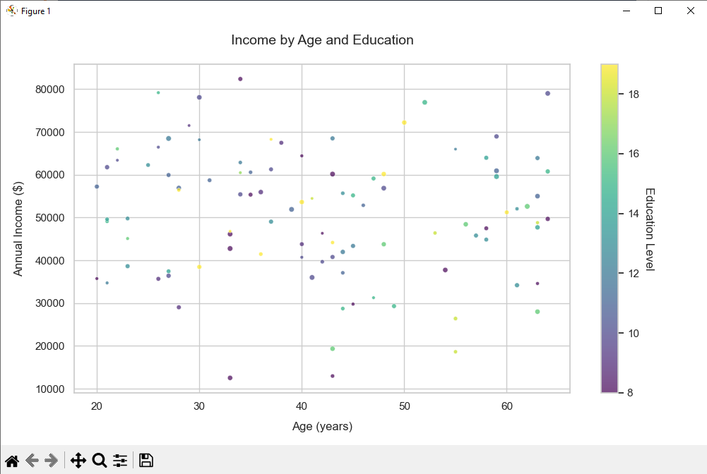

Visualization Fundamentals
Data visualization is the graphical representation of information and data. By using visual elements like charts, graphs, and maps, we can see and understand trends, outliers, and patterns in data.
Key Principle: A good visualization tells a story, removing the noise from data and highlighting the useful information.
Matplotlib Fundamentals
The foundation of Python visualization - a MATLAB-style plotting system.
Figure and Axes objects (plt.figure(), plt.subplots())
Basic plot types (line, bar, scatter, histogram)
Customizing markers, lines, and colors
Adding titles, labels, and legends
Example Code:
import matplotlib.pyplot as plt
import numpy as np
# Create data
x = np.linspace(0, 10, 100)
y = np.sin(x)
# Create plot
fig, ax = plt.subplots(figsize=(8,4))
ax.plot(x, y, 'b-', linewidth=2, label='Sine Wave')
ax.set_title('Basic Matplotlib Example')
ax.set_xlabel('X values')
ax.set_ylabel('Y values')
ax.legend()
plt.show()
Seaborn for Statistical Plots
High-level interface for drawing attractive statistical graphics.
Relationship plots (scatterplot, lineplot)
Distribution plots (histplot, kdeplot, ecdfplot)
Categorical plots (barplot, boxplot, violinplot)
Matrix plots (heatmap, clustermap)
Example Code:
import seaborn as sns
import pandas as pd
# Load sample data
tips = sns.load_dataset('tips')
# Create plot
sns.set_theme(style="whitegrid")
g = sns.relplot(
data=tips,
x="total_bill", y="tip", col="time",
hue="smoker", style="smoker", size="size",
)
g.set_axis_labels("Total bill ($)", "Tip ($)")
g.legend.set_title("Smoker")
Professional Customization
Advanced techniques to create publication-quality visualizations.
Color palettes and themes
Figure layout and composition
Advanced annotations and text styling
Grid and axis customization
Professional Visualization Example:
import matplotlib.pyplot as plt
import seaborn as sns
import pandas as pd
import numpy as np
# Create professional-looking sample data
np.random.seed(42)
professions = ['Engineer', 'Doctor', 'Teacher', 'Analyst', 'Manager']
df = pd.DataFrame({
'Age': np.random.randint(25, 65, 200),
'Income': np.random.normal(50000, 20000, 200).astype(int),
'Education': np.random.randint(12, 21, 200),
'Experience': np.random.randint(1, 40, 200),
'Profession': np.random.choice(professions, 200),
'Hours': np.random.normal(40, 10, 200).astype(int)
})
# Set professional style
plt.style.use('seaborn-v0_8-whitegrid')
sns.set_palette("husl")
# Create figure with constrained layout
fig, ax = plt.subplots(figsize=(12, 7), layout='constrained')
# Create enhanced scatter plot
scatter = ax.scatter(
x='Age',
y='Income',
c='Education',
cmap='viridis',
alpha=0.8,
data=df,
s=df['Experience']*2, # Size by experience
edgecolor='white',
linewidth=0.8
)
# Professional customizations
ax.set_title('Income Distribution by Age and Education Level\nAcross Professions',
pad=20,
fontsize=16,
fontweight='bold')
ax.set_xlabel('Age (Years)',
labelpad=12,
fontsize=12,
fontweight='semibold')
ax.set_ylabel('Annual Income ($)',
labelpad=12,
fontsize=12,
fontweight='semibold')
# Improve ticks
ax.tick_params(axis='both', which='major', labelsize=10)
ax.grid(True, linestyle='--', alpha=0.4)
# Add professional colorbar
cbar = fig.colorbar(scatter, ax=ax, pad=0.02)
cbar.set_label('Years of Education',
rotation=270,
labelpad=25,
fontsize=12,
fontweight='semibold')
cbar.ax.tick_params(labelsize=10)
# Add annotation
ax.annotate('Data: Synthetic Professional Dataset | Visualization: Matplotlib',
xy=(0.5, -0.15),
xycoords='axes fraction',
ha='center',
fontsize=9,
color='gray')
# Add legend for profession (example)
handles = [plt.Line2D([0], [0], marker='o', color='w',
markerfacecolor='gray', markersize=10,
label=prof) for prof in professions[:3]]
ax.legend(handles=handles, title='Professions',
bbox_to_anchor=(1.02, 1),
loc='upper left')
plt.savefig('professional_income_plot.png', dpi=300, bbox_inches='tight')
plt.show()

Pro Tip: For truly publication-ready figures, consider:
- Using vector formats (.svg or .pdf) for print publications
- Adjusting font sizes for your target medium (smaller for print, larger for presentations)
- Adding a descriptive caption when publishing